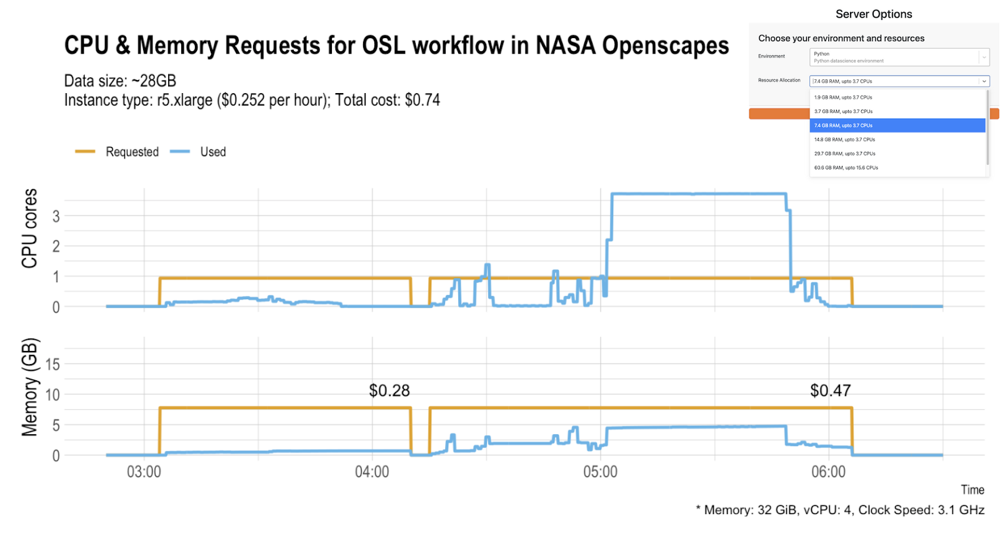

What we’re learning about cloud costs for Earth science workflows in our JupyterHub
Andy Teucher ![]()
Alex Lewandowski
Eli Holmes
Tasha Snow
Yuvi
Julie Lowndes
On April 22, 2025 Openscapes hosted a Community Call to share what we’re learning about cloud costs for Earth science workflows in our JupyterHubs. We are working deeply with NASA Openscapes Mentors and NOAA Openscapes Mentors to use, teach, and develop with 2i2c; and increasingly have cross-NASA collaborations with other hubs like the Alaska Satellite Facility (ASF) and CryoCloud. This was a first conversation. There is so much more to share than we had time for, and there was a lot more interest in questions and community examples. Through a light interview structure, Andy Teucher (Openscapes), Alex Lewandowski (NASA Alaska Satellite Facility), Eli Holmes (NOAA Fisheries), Tasha Snow (CryoCloud), and Yuvi (2i2c) shared their experiences and what they are building.
Quick links:
- Community Call YouTube Recording
- Speakers slides
- Community Call Collaborative Notes
Openscapes and our partners at NASA, NOAA, and 2i2c have been learning together about monitoring and managing the costs of cloud computing in a JupyterHub. Many organizations are starting to use cloud computing for computational analysis and teaching workshops, often using JupyterHubs as the platform for this work. Tracking usage and attributing costs to specific users and workflows can be tricky on these shared hubs, and we have been learning some strategies and tools to help us understand them. The purpose of this Community Call was to share what we’ve learned so far: tools and processes to explore cloud costs, as well as figures like the basic costs for hosting a hub, cost per user, cost per science workflow, and what it costs to run a workshop in the hub.
One punchline: yes it is possible to run real science workflows in different Hubs – and we can estimate the costs. An example workflow transported from Alaska Satellite Facility (ASF) OpenSARLab to NASA Openscapes Hub cost $0.74. This cost does not reflect the cost of technical infrastructure & development, plus the training and upskilling the researcher needs. When comparing costs, it is important to keep in mind that different JupyterHubs have different focuses (e.g., data type(s) and usage patterns) and, consequently, different architectures that can greatly affect costs even for similar workflows. Yet, it is an exciting step in understanding the cost of earth science workflows in the cloud!

The format of the call was several stories and demos from this cutting-edge collaboration between open source infrastructure, government agencies, science communities (slides). Here is the story arc, and a few key notes.
Why JupyterHubs for research, how do people use them, and why are they different? - Tasha Snow, CryoCloud.
Showed what JupyterHubs looked like; compared Cryocloud, Openscapes (NASA and NOAA), and OpenSARLab
“With training and support we can have an undergrad working with NASA data in the cloud in an afternoon” 💜
Communicating usage and costs - creating monthly reports - Andy Teucher, Openscapes.
Showed Automated reporting (R package jupycost to query Prometheus and AWS Cost Explorer, automated monthly reports for NASA and NOAA at openscapes.cloud). Also showed costs for Hub to sit unused; cost to run a workshop; cost of data storage.
Data storage in the cloud can be very expensive, and incurs ongoing costs just sitting there. There are different storage types (e.g., AWS S3) that can be cheaper but require different skills and mindsets.
What we’re seeing with researchers: the need for py-rocket, a cross-language (R, python) docker image - Eli Holmes, NOAA Fisheries
Creating Python-R environments that promote integrated Python/R teams by reducing the little barriers and road bumps
Fisheries science has siloed language communities: Python’s ‘conda install R’ is a non-starter for R users; the reticulate R interface to Python feels similar for Python users.
Documentation with an eye to extension and reuse: https://nmfs-opensci.github.io/py-rocket-base/
Upskilling has been a big part at NOAA Fisheries. Building a cross-agency community of mentors to support staff learning new skills for cloud computing.
Building Guard Rails to control Cloud Costs - Yuvi, 2i2c
JupyterHub is an open source software / ecosystem, so we the community have a lot of power in building what serves us
Use Open Source tools to help you track and estimate costs and visualize usage (e.g., Grafana and Prometheus) - these provide “guardrails” for users to understand what they are trying to do and get the support they need.
A real science workflow, what it costs, transferability across Hubs - Alex Lewandowski, ASF
Andy queried Prometheus and AWS to determine the resource usage and cost of Alex’s work in the Openscapes Hub. Challenges of “the right size”: overallocate and pay too much for what you need; or underallocate and run out of memory or compute. We can use these tools to help uncover this
How do we provide this information to users so they can pick the appropriate resources they need? So we don’t waste resources for the Hub (or their grants) and also not cause frustration of running out of space/size and redo multiple times – this wastes money too.
Some people will still need to work locally sometimes; we should make that as easy as possible.
Different hubs have different architectures for a reason - e.g., ASF supports SAR (Synthetic Aperture Radar) data and their JupyterHub’s configuration is optimized for SAR workflows used for research, decision-making, and disaster response as well as training.
Resources
openscapes.cloud for NASA and NOAA Fisheries JupyterHub policies and cost reporting.
2i2c helps communities build their own interactive computing hub in the cloud with open infrastructure.
CryoCloud: Accelerating discovery and enhancing collaboration for NASA Cryosphere communities.
Grafana for monitoring and visualizing usage data.
AWS Cost Explorer and API docs for managing cloud costs on AWS.
jupycost: A work-in-progress R package from Openscapes for querying and summarizing JupyterHub cost and usage statistics.
sixtyfour: An R package for interfacing with AWS APIs, from the Fred Hutch Cancer Center Data Science Lab
grafana-dashboards: Grafana Dashboards used in our JupyterHubs. Provides Grafana Dashboards as code – very useful for learning how to query Prometheus metrics.
Speakers
Tasha Snow is a co-founder of CryoCloud, a remote sensing glaciologist at ESSIC University of Maryland and NASA GSFC, and was the recipient of the 2023 AGU Open Science Recognition Prize.
Andy Teucher is a core Openscapes team member and develops software and cloud infrastructure. He is a biologist turned data scientist, specializing in helping people and organizations build maintainable, reproducible data workflows. Andy is a strong open data and open code advocate, and believes in the value of using and contributing to open-source software.
Eli Holmes is currently lead of NOAA Fisheries Open Science and in this role, facilitates and runs trainings in computing, data access and statistics for NOAA Fisheries. She is co-lead of the Inter-agency R User Group (federal agencies) and NMFS Openscapes, and other trainings and HackWeeks.
Yuvi is a co-founder and tech lead of 2i2c.org, a core member of the JupyterHub team, ex-member of the Wikimedia DevOps team and has been doing open source work for about 17 years in various communities.
Alex Lewandowski is a research software engineer at the Alaska Satellite Facility. He works on the Science Enabling Services Team. Much of his work focuses on providing support, educational materials, and tools to ASF’s users of SAR data. He has been an Openscapes Mentor since 2022.
Citation
@online{teucher2025,
author = {Teucher, Andy and Lewandowski, Alex and Holmes, Eli and
Snow, Tasha and , Yuvi and Lowndes, Julie},
title = {What We’re Learning about Cloud Costs for {Earth} Science
Workflows in Our {JupyterHub}},
date = {2025-05-01},
url = {https://nasa-openscapes.github.io/news/2025-05-01-community-call-hub-cloud-costs/},
langid = {en}
}